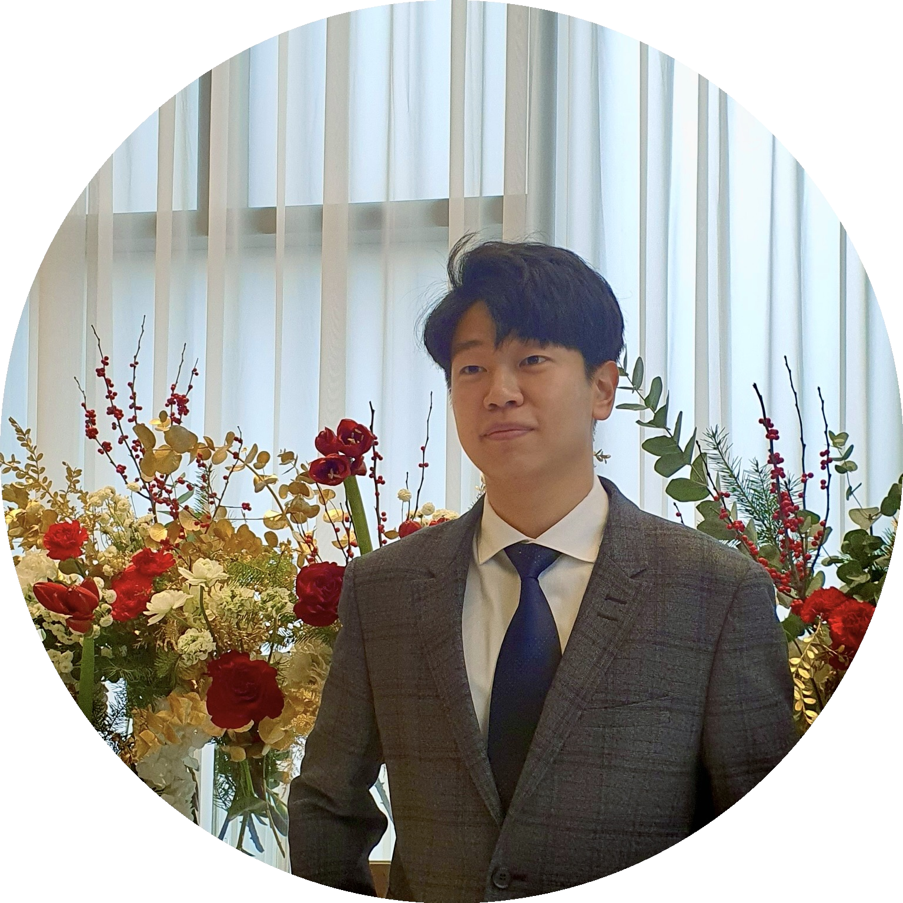
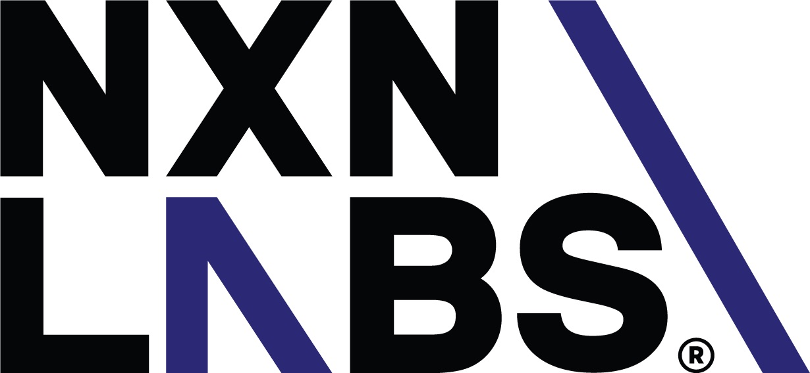
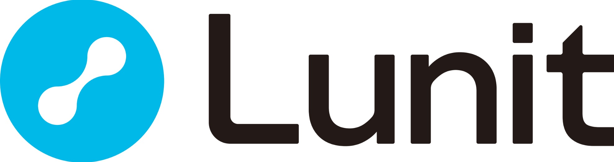
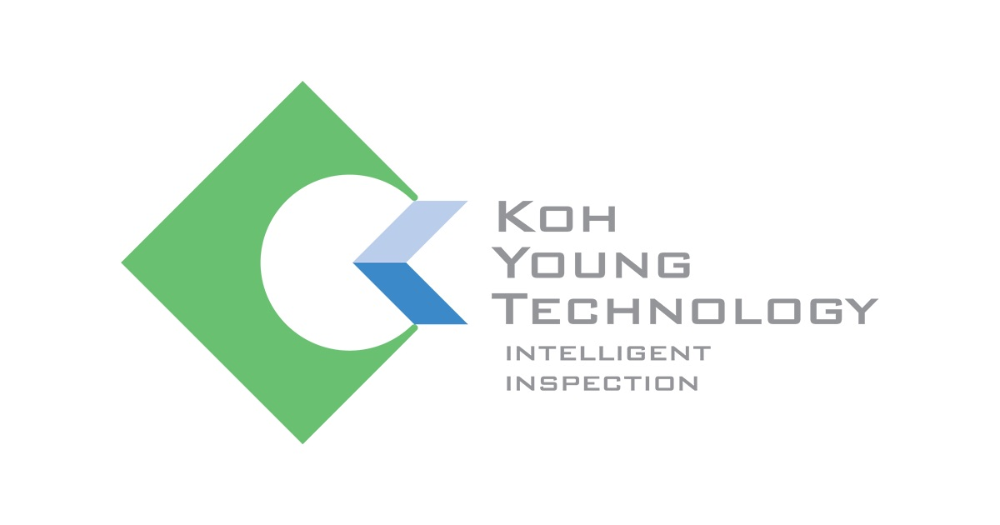

|
Seungyong Lee
My research interests lie in computer vision, particularly in both understanding and generating complex visual worlds.
I am interested in visual recognition as a way to perceive the world, and in generative models as a means to recreate and manipulate it.
I am also passionate about large-scale model training and scalable inference systems from an engineering perspective.
At NXN Labs, I have led the development of virtual try-on models and image generation frameworks,
taking ownership of the full pipeline—from problem definition and data collection to model design, training, and deployment.
I studied Mathematics and Electrical Engineering at KAIST, where I am currently on a leave of absence.
Email /
CV /
Github /
LinkedIn
|

|
- Oct 2025: Voost was accepted to SIGGRAPH Asia 2025.
- Sep 2025: Launched a Hugging Face Space demo for Voost; surpassed 100 K visits in one month and ranked #4 in Trending Spaces.
- Jun 2025: Attended CVPR 2025 in Nashville. Great to meet so many of you!
- Apr 2025: Our paper was accepted to a CVPR 2025 workshop.
- Jun 2024: Attended CVPR 2024 in Seattle.
- Jul 2023: Joined NXN Labs as a founding AI research engineer.
- Jan 2023: Joined Lunit as an AI Research Scientist Intern.
|

|
NXN Labs
AI Research Engineer, Founding Member (Jul 2023 – Present)
Led research and engineering initiatives in virtual try-on and virutal human for large-scale applications.
Designed scalable data and training pipelines for multi-node GPU clusters.
Developed and maintained a k8s inference architecture serving multiple model endpoints.
Built a VLM-driven automation pipeline for image–metadata preprocessing and database ingestion, and defined new research directions in depth-aware segmentation and multi-context image editing.
Supervised and mentored four engineer interns, fostering collaboration across model, data, and deployment tasks.
|
|

|
Lunit
AI Research Scientist Intern (Jan 2023 – Jul 2023)
Worked on medical image recognition using computer vision techniques, focusing on tumor cell detection and segmentation in pathological images with Vision Transformers.
|
|

|
Koh Young Technology R&D Center
AI Engineer Intern (Aug 2020 – Feb 2021)
Participated in an anomaly detection project for inspecting defects on semiconductor substrates and developed data labeling and real-time inference tools.
|
|